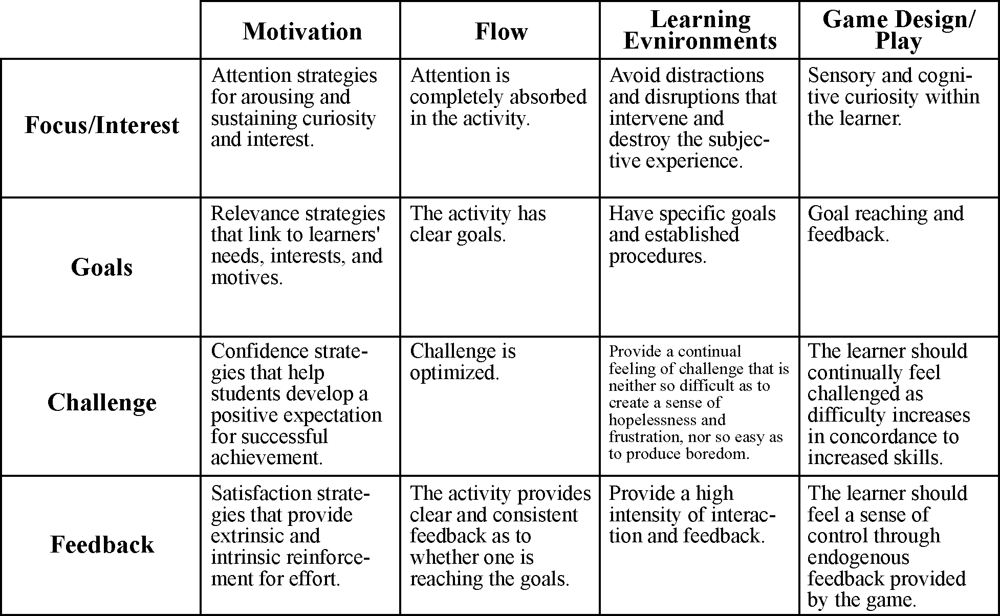

Game, Motivation, and Effective Learning: An Integrated Model for
Educational Game Design
Brad Paras
Simon Fraser University Surrey
2400 Surrey Place
10153 King George Highway, Surrey BC
604.671.1794
bparasa@sfu.ca
Jim Bizzocchi
Simon Fraser University Surrey
2400 Surrey Place
10153 King George Highway, Surrey BC
604.268.7437
jimbiz@sfu.ca
As new technologies enable increasingly
sophisticated game experiences, the potential for the integration of games and
learning becomes ever more significant. Motivation has long been considered as an
important step in learning. Researchers suggest Csikszentmihalyi’s Flow Theory
as a method for understanding and implementing motivation. This bears
significance since games foster play, which produces a state of flow, which
increases motivation, which supports the learning process. However, this
relationship is not as straightforward as it first seems. Research also shows
that reflection is an important part of the learning process and while in the
state of flow, players rarely reflect on the learning that is taking place. This
paper explains how games can act as effective learning environments by integrating
reflection into the process of play, producing an endogenous learning
experience that is intrinsically motivating.
Games,
Motivation, Flow, Play, Reflection
Game environments have great potential to support immersive learning experiences. Learning can be defined as “the act, process, or experience of gaining knowledge or skill.” To engage in this act of gaining knowledge or skill, learners must be motivated. According to Chan & Ahern [2], “When people are intrinsically motivated to learn, they not only learn more, they also have a more positive experience.” Games meet both these tests for effective learning environments: they are active experiences, and they have the capacity to provide intrinsic motivation.
To motivate is to “provide with an incentive”. To motivate someone to learn is to provide them with an incentive to engage in the act of gaining knowledge. In traditional instructional design practice, motivation is often considered as a preliminary step in the instructional process [2]. Intrinsic motivation in learning, however, focuses on the development of motivation throughout the entire instructional process. Though traditional instructional design practice focuses on a less integrated approach, developing life-long learners who are intrinsically motivated, display intellectual curiosity, find learning enjoyable, and continue seeking knowledge after their formal instruction has ended has always been a major goal of education [17].
Looking at the ‘effort’ expelled during the learning process will help determine whether learners are motivated. However, for ‘effort’ to even occur, there are two necessary prerequisites required: (1) the person must value the task and (2) the person must believe he or she can succeed at the task. In any given instructional situation, the learning task needs to be presented in a way that is engaging and meaningful to the student, and in a way that promotes positive expectations for the successful achievement of learning objectives [17]. To help understand motivation in instruction we can look at the ARCS Model of Motivational Design as developed by John M. Keller of Florida State University [9]. The ARCS Model identifies four essential strategy components for motivating instruction:
[A]ttention
strategies for arousing and sustaining curiosity and interest.
- Learners are more motivated when the instructional design generates curiosity
and interest about the content or learning context.
[R]elevance strategies that link to learners' needs, interests, and motives.
- Learners are more motivated when goals are clearly defined and align with
learners’ interests.
[C]onfidence strategies that help students develop a positive expectation for
successful achievement.
- Learners are more motivated when challenge is balanced in such a way that the
learning process is neither too easy as to bore the leaner, or too difficult
such that success seems impossible.
[S]atisfaction strategies that provide extrinsic and intrinsic reinforcement
for effort.
- Learners are more motivated when there are rewards for correctly executed
actions.
Chan and Ahern [2] suggest Csikszentmihalyi’s Flow Theory as a method for understanding and implementing motivation. Flow explains a phenomenon that many people find themselves experiencing when they reach a state where there becomes a perfect balance between challenge and frustration, and where the end goal becomes so clear that hindrances fall out of view. The flow theory is a theoretical bridge between the concerns of instructional design and motivational design theory [2].
According to Mihaly Csikszentmihalyi [3], flow is being completely involved in an activity for its own sake. Consistent with the ARCS model, applications of this theory focus on providing the learner with appropriate challenge, setting concrete goals, structuring control, and providing clear feedback [2]. While in flow state, the learner is completely motivated to push their skills to the limit. In an instructional context, this is a highly desirable state. Csikszentmihalyi [4] states that, “A flow experience has got to be challenging. Anything that is not up to par is going to be irritating or ignored.” To learn, students need to be motivated, and an appropriate level of challenge combined with a clear and attainable goal is highly motivating. Since flow experiences share these key aspects of motivational design, they can be described as intrinsically motivating.
Instructional designers can utilize game environments that support flow and enable learning. Learning environments have been largely limited to the classroom model: the teacher stands in front of the class and transmits knowledge to a listening group of students. To support a flow state, a learning environment must closely match each student’s skill level, and provide tasks with clear goals and immediate individual feedback. Houser and De Loach [7] review Donald Norman's work: Things that make us Smart. Norman identifies seven basic requirements of a learning environment:
· Provide a high intensity of interaction and feedback.
· Have specific goals and established procedures.
· Motivate.
· Provide a continual feeling of challenge that is neither so difficult as to create a sense of hopelessness and frustration, nor so easy as to produce boredom.
· Provide a sense of direct engagement, producing the feeling of directly experiencing the environment, directly working on the task.
· Provide appropriate tools that fit the user and task so well that they aid and do not distract.
· Avoid distractions and disruptions that intervene and destroy the subjective experience.
These characteristics of effective learning environments closely match the characteristics inherent in flow-like experiences and motivational design. Houser and Deloach conclude that if we accept Norman’s requirements for a learning environment, then we must acknowledge that learning is integrally related to games. Games make learning look so much like fun that they mask the large amount of learning required to play them successfully [7].
Gaming environments are quite unlike any other environments we immerse ourselves in because they allow us to freely do as we please with little or no consequence. If this were all that gaming environments consisted of, however, they would get very boring very quickly. So then, should gaming environments be tightly guided, question-answer scenarios with finite end states? Just like learning environments shouldn’t restrict the learner’s ability to more freely construct knowledge, the game environment should not restrict the player’s cognitive process but rather allow the game player to freely make choices that help to reach an end goal.
A game is “a system in which players engage in artificial conflict, defined by rules, that results in a quantifiable outcome.” [16]. The goal of successful game design is the creation of meaningful ‘play’ which is achieved by creating game-play that enables discernable and integrated interaction by the player [16]. Johann Huizinga [8] defines play as “a free activity standing quite consciously outside ‘ordinary’ life as being ‘not serious’, but at the same time absorbing the player intensely and utterly”. Through their use of immersive experiences, games provide opportunity for play which can result in flow experiences.
Lepper and Malone [11], in an attempt to define specific principles for instructional game design, illustrate four key attributes that educational games must employ. First, games must introduce challenge. Through goal reaching and feedback, the learner should continually feel challenged as difficulty increases in concordance to increased skills. Second, the game should create sensory and cognitive curiosity within the learner. Third, the learner should feel a sense of control through endogenous feedback provided by the game. Fourth, games should use fantasy to reinforces the instructional goals and stimulate the prior interests of the learner.
Through the four lenses of motivation, flow, learning environments, and game design, there are clear connections that show how learning and gaming are fundamentally built from the same base. Figure 1 illustrates the commonalities between these four lenses.

Figure 1: Commonalities between the four lenses of motivation, flow, learning environments, and game design are illustrated horizontally (Motivation: Keller [9]; Flow: Rieber [15]; Learning Environments: Houseer & Deloach [7]; Game Design: Lepper & Malone [11]).
The diagram below illustrates the potential for well-designed educational games:
Games Play Flow Motivation Learning
Games foster play, which produces a state of flow, which increases motivation, which supports the learning process. The juncture of learning outcomes with well-designed game mechanics can result in learning experiences which are intrinsically motivating. The challenge for educational designers is to build environments where the dynamics of learning are fully integrated with the dynamics of game-play.
Lepper and Malone describe a term called ‘Fantasy’. According to Hoonhout, Diederiks, & Stienstra [6], fantasy has to do with the scene in which the activity is embedded; this should aim to intrigue the user, and provide an attractive setting. Fantasy is what players first experience when they play a game. They see the graphics, hear the sounds, and interact with the world. Many educational games implement a form of educational ‘sugar coating’ known as exogenous fantasies [15]. In these types of educational games, the game and all its components are used merely to improve the educational setting. In contrast, games that employ endogenous fantasies weave the content into the game. One cannot tell where the game stops and the content begins [15].
According to Salen and Zimmerman [16], play takes place within a ‘magic circle’. The magic circle defines the space where the game takes place. It is a finite space with infinite possibility where the learner is able to suspend all disbelief. Huizinga [8] describes these places as “temporal worlds within the ordinary world, dedicated to the performance of an act apart”. If learning takes place outside of the magic circle, the game’s powerful ability to draw the learner into a state of flow is broken, and the learning becomes an incidental intrusion. In a fully integrated educational game, ‘stealth learning’ can occur naturally within the context of the game world [5, 14].
Educational game designers therefore need an understanding of how to create games that enable the learner to enter the magic circle. To enter the magic circle, the learner must immerse themselves through the pleasurable surrender of the mind to an imaginative world [13]. There are four essential properties that describe digital environments such as games; digital environments are procedural, participatory, spatial, and encyclopedic [13]. The latter two of these properties focus on the concept of immersion. The spatial properties of digital environments can often draw the learner in by enticing them to enter the space within the game. To create strong spatial qualities, games use compelling graphics, sound, and physical interaction to help the learner enter into the gaming world. If the game is encyclopedic enough to respond to the learner’s input once the learner is immersed within the world, the learner enters into the magic circle. Once inside the magic circle, outside things do not distract; rather, the learner’s focus is solely on the game and the events taking place within the game world.
Immersion, although it requires a form of submission to rules, involves a willing suspension of disbelief and a conscious and voluntary acceptance of the particular conditions of the virtual environment which, paradoxically, gives its players in return unrestricted access to possibilities for full participation [5]. De Castell & Jenson argue that educational games are not immersive for two reasons. First, educational games typically do not connect game-play elements with content and context elements. Second, educational games do not permit or support freedom of movement in space [5]. Both these reasons focus on the exogenous tendencies of educational games of the past. Educational game design must focus on intersecting play and education so that the magic circle is kept closed and immersion can take place.
The educational possibilities that videogames provide are similar to those known in ‘active learning’. Active learning is student participation in the learning and teaching process, where students themselves engage with and, to an extent, create their own learning experience. This learning strategy emphasizes the process of ‘reflection’, that is, purposeful and critical thought that leads to an idea being developed or taken forward in some way [12]. Rather than a linear process, learning, follows a cyclic pattern: experiencing, reflecting on that experience, drawing conclusions based on these reflections, forming a plan for new action based on these conclusions, then acting again, and so on [10]. Reflection is an important part of the cycle. Without reflection the cycle is unable to effectively lead to new conclusions and action.
One of the difficulties with flow experiences is the lack of reflection that is able to take place while one is in this state. Though someone may be pushing their skills to the limit, they may not be reflecting on their experience and are therefore limiting what they can learn from it. While in a state of flow or while play a game, learning is made possible through the use of concrete goals. To prevent the learner from wandering around aimlessly, a game creates goals that the user must meet before being able to progress. While playing the game, the learner may enter the magic circle and take on the responsibility of reaching specific goals without ever reflecting on the strategies used to reach these goals. Though the act of gaining knowledge or skill may take place, learning is not fully realized unless the player reflects on the events that took place during the experience.
If the play must be broken up by a reflection period, it would seem that the magic circle can no longer exist and any advantages gained by using game strategies are futile. The solution to this problem lies in the endogenous implementation of reflection. In educational game design it is important to ensure that learning takes places within the realm of play, even if learning is only made possible through reflection. To do so, reflection must appear to the learner as one of the many in-game goals that drive the game-play.
Take, for example, the design of an educational hockey game that teaches about mild traumatic head injury (concussion). In this game, learners take on a first-person perspective and play hockey while ensuring that they stay healthy by taking rests when they notice that they might be experiencing symptoms of concussion. Managing rest and play is simply another game-play variable that the players must interactive with. Players that engage in concussive activities are forced to sit for a while and consider the seriousness and the implications of concussion effects, just a player would be forced to sit in a live hockey game. The act of reflection is incorporated into both the core mechanics of the game, and the fantasy experience of the game world. During the reflection period, it is likely that the player will not exit the magic circle, and the reflection period will encourage the player to learn how to play better, safer hockey. This is an example of an integrated design approach that reconciles flow, learning, and endogenous motivation within an immersive game experience.
1. Chamberlin, J. “Reaching ‘flow’ to optimize work and play,” American Psychological Association vol. 29, no. 7 Available at: http://www.apa.org/monitor/jul98/joy.html.
2. Chan, T. S., & Ahern, T. C. “Targeting motivation – adapting flow theory to instructional design,” Journal of Educational Computing Research, 21 (2), 152-163.
3. Csikszentmihalyi, M. Flow: The Psychology of Optimal Experience. New York: Harper & Row, 1990.
4. Csikszentmihalyi, M. & Geirland, J. “Go With the Flow,” Wired Magazine (1996). Available at: http://hotwired.wired.com/collections/web_development/4.09_csik_pr.html
5. De Castell, S., & Jenson, J. (2003). Serious Play. Journal of Curriculum Studies, Vol. 35, No. 6, 649-665.
6. Hoonhout, J., Diederiks, E. & Stienstra, M. “Designing fun, and test it too,” Usability Professionals’ Association, Marriott City Center Minneapolis, Minnesota. Available at: http://www.upassoc.org/conferences_and_events/upa_conference/2004/program/Workshops/DesigningFun.html
7. Houser, R., & Deloach, S. “Learning from games: Seven principles of effective design,” Technical Communication (August, 1998), pp. 319-329.
8. Huizinga, Johann. Homo Ludens: A Study of the Play Element in Culture. Boston: Beacon Press, 1955.
9. Keller, J. M. “Motivational design of instruction,” In C.M. Reigeluth (Ed.). “Instructional design theories and models: An overview of their current status,” Hillsdale, NJ: Erlbaum, 1983.
10. Kolb, D. A. “Experiential Learning: experience as the source of learning and development,” Englewood Cliffs, 1984.
11. Lepper, M. R., & Malone, T. W. “Intrinsic motivation and instructional effectiveness in computer-based education,” In R. E. Snow & M. J. Farr (Eds.) “Aptitude, learning, and instruction: Vol. 3. Cognitive and affective process analysis,” (1987) Hillsdale NJ: Erlbaum, pp. 255-286.
12. Mitchell, L. “Active Learning and Reflection,” LTSN: History, Classics & Archaeology. Available at: http://hca.ltsn.ac.uk/resources/Briefing_Papers/Active_Learning_Reflection.pdf
13. Murray, J. Hamlet on the Holodeck: The Future of Narrative in Cyberspace. New York: The Free Press, 1997.
14. Prensky, M. Digital Game-Based Learning. New York: McGraw-Hill, 2001.
15. Rieber, L. P. “Seriously considering play: Designing interactive learning environments based on the blending of microworlds, simulations, and games,” Educational Technology Research and Development 44(2) (1996), pp.43-58.
16. Salen, K. & Zimmerman, E. Rules of Play: Game Design Fundamentals. Massachusetts Institute of Technology, 2004.
17. Small, R. V. “Motivation in Instructional Design,” in ERIC Digest (1997), ERIC Clearinghouse on Information and Technology Syracuse NY.